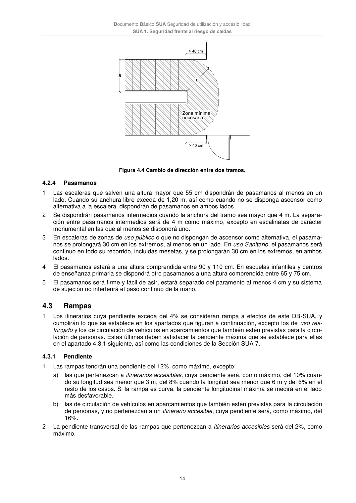

DB-SUA Seguridad de utilización y accesibilidad · edición 2022-06-14 · capa oficial
Documento DB-SUA-oficial · SHA-256 del PDF 3cfb5bbb135e8f02faebd8b844e03e8947994c18d4c9e675a7d2aa37d1cd5958
Página física 14 de 47.
Copia fiel del PDF fuente · Fuente oficial
Ficha de la disposición en la fuente oficial
Formato: Texto de la página (Markdown)
Documento Básico SUA Seguridad de utilización y accesibilidad SUA 1. Seguridad frente al riesgo de caídas 14 Figura 4.4 Cambio de dirección entre dos tramos. 4.2.4 Pasamanos 1 Las escaleras que salven una altura mayor que 55 cm dispondrán de pasamanos al menos en un lado. Cuando su anchura libre exceda de 1,20 m, así como cuando no se disponga ascensor como alternativa a la escalera, dispondrán de pasamanos en ambos lados. 2 Se dispondrán pasamanos intermedios cuando la anchura del tramo sea mayor que 4 m. La separa- ción entre pasamanos intermedios será de 4 m como máximo, excepto en escalinatas de carácter monumental en las que al menos se dispondrá uno. 3 En escaleras de zonas de uso público o que no dispongan de ascensor como alternativa, el pasama- nos se prolongará 30 cm en los extremos, al menos en un lado. En uso Sanitario, el pasamanos será continuo en todo su recorrido, incluidas mesetas, y se prolongarán 30 cm en los extremos, en ambos lados. 4 El pasamanos estará a una altura comprendida entre 90 y 110 cm. En escuelas infantiles y centros de enseñanza primaria se dispondrá otro pasamanos a una altura comprendida entre 65 y 75 cm. 5 El pasamanos será firme y fácil de asir, estará separado del paramento al menos 4 cm y su sistema de sujeción no interferirá el paso continuo de la mano. 4.3 Rampas 1 Los itinerarios cuya pendiente exceda del 4% se consideran rampa a efectos de este DB-SUA, y cumplirán lo que se establece en los apartados que figuran a continuación, excepto los de uso res- tringido y los de circulación de vehículos en aparcamientos que también estén previstas para la circu- lación de personas. Estas últimas deben satisfacer la pendiente máxima que se establece para ellas en el apartado 4.3.1 siguiente, así como las condiciones de la Sección SUA 7. 4.3.1 Pendiente 1 Las rampas tendrán una pendiente del 12%, como máximo, excepto: a) las que pertenezcan a itinerarios accesibles, cuya pendiente será, como máximo, del 10% cuan- do su longitud sea menor que 3 m, del 8% cuando la longitud sea menor que 6 m y del 6% en el resto de los casos. Si la rampa es curva, la pendiente longitudinal máxima se medirá en el lado más desfavorable. b) las de circulación de vehículos en aparcamientos que también estén previstas para la circulación de personas, y no pertenezcan a un itinerario accesible, cuya pendiente será, como máximo, del 16%. 2 La pendiente transversal de las rampas que pertenezcan a itinerarios accesibles será del 2%, como máximo.
